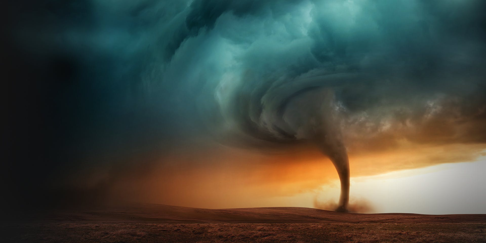

We comprehensive resources that explain various types of natural disasters, including earthquakes, floods, hurricanes, tornadoes, wildfires, and more.
We provide step-by-step guides on creating effective emergency preparedness plans. These plans cover aspects such as family communication, evacuation strategies, assembling emergency kits, and safeguarding important documents.
Our website offers practical safety guidelines for different types of natural disasters. From finding safe spots during earthquakes to evacuation routes during hurricanes, we help visitors make informed decisions to protect themselves and their communities.

If you want to see the pictures and websites we reference our pictures and ideas from you can check our references list page and if you want to ask questions or give some feedback you can contact us using the contact info page
